Chapter 1. On Demo Culture
We start on the journey through demo history to discover the meaning of limitations in the creative process. This section covers the demoscene's pending international recognition as the first item of digital cultural heritage, its importance in computing history and its origins in the cracker scene. In further delves into the role of demos in new media art as digital folklore and the definition of limitations. Finally, this section concludes with an overview of online collections and archives of demo art.
1.1 Demos as Cultural Heritage
At the start of 2020, activists from the Art of Coding initiative made a remarkable effort to list the demoscene as the first digital culture item on UNESCO's list of Intangible Cultural Heritage.
Two independent efforts in the demoscene showed first successes. In April 2020, an initiative in Finland achieved that the government included the demoscene on their national UNESCO list of intangible cultural heritage of humanity.[14]
On their website, Andreas Lange and Tobias Kopka, the initiators of the campaign "Art of Coding," describe the mission of their initiative as:
"The Demoscene, which is born at the heart of the home computer revolution, has been showing how skills and creativity can be stimulated and implemented in a dynamic cultural practice adopted to digital contexts. Many of its techniques and mindsets became core techniques and influences of the digital change and are still vibrant today. Seven decades after the invention of computers we think it's time to push for the next step to take born-digital culture seriously as part of our cultural heritage, starting an initiative to bring the demoscene onto the list of the UNESCO intangible world cultural heritage. So we invite all sceners and non-sceners to join us and support the initiative in the upcoming years."[15]
Together with the increased research interest in the field of Media Art Histories, the initiative's success in Finland thus far is an official legitimization of the demoscene as inherent digital art and digital culture. While demos are a part of the larger area of media art and digital arts, only the well-connected and networked nature of the demoscene has made it possible to promote them specifically as the very first digital culture to be considered for inclusion on the UNESCO list of Intangible Cultural Heritage.
Barely a week after the success in Finland, the "Art of Coding" initiative in Germany (represented through the Cologne-based Digital Kultur e.V.) successfully nominated the demoscene as a digital cultural form of heritage in the most populous German province of North Rhine-Westphalia. This is one of the necessary steps for a nomination to proceed on a federal level and, following that, an official request by the Federal Republic of Germany to UNESCO.[16][17]
These official acts of legitimization stem from the established institutions of mainstream culture. Only active lobbying by a group can achieve this kind of recognition. In contrast to other digital art cultures, the demoscene learned to collaborate to pursue common goals early in its existence. The scene has been, and will continue to be, one of the many engines of a much larger movement: the open-source software (OSS) movement. It is not an inherent requirement for demo-makers to share code and the "secrets" of the hacks used to achieve certain effects or break specific limits, but it has become a common practice in the demoscene. Many share their code on the version control service Github under a Creative Commons license so that others can not only learn from and appropriate it, but also marvel at its ingenuity.[18]
The ethos of early demo-makers anticipated the later open-source movement, with the idea that the machine they own should be completely controlled by the developers and all its capabilities should be discovered and used. This made the demoscene the first widespread computer art movement in computing history.
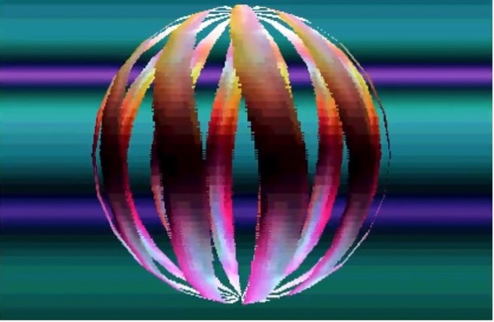
Figure 1: Atari STE Demo Sea of Colour - Dead Hackers Society. 2015. (Source: https://youtu.be/1hvFiv2hpYE )
1.2 Demos as Part of Computing History
Demos and the demoscene are a small but important part of home computing history. In contrast to the top-down approach of computer science in industry and academia, demos exemplify the "grassroots" approach of the home computer revolution. When the home computer democratized access to information processing technology in the late 1970s and early 1980s, they delivered a completely new instrument to the households of the day.
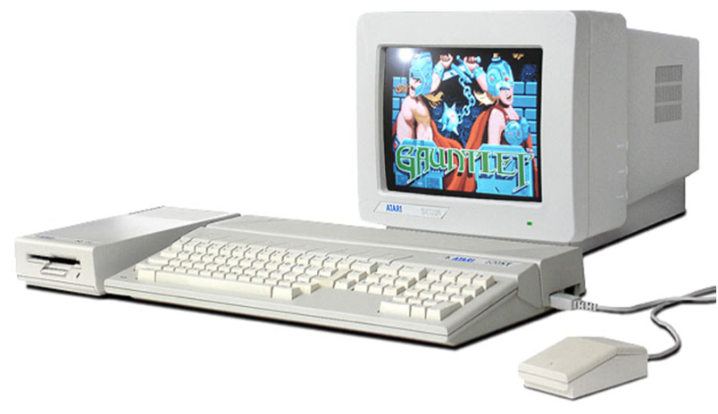
Figure 2: Atari 520ST (Source: http://oldcomputers.net/atari520st.html )
With the right software, users could compose professionally typed letters in a word processor, create business graphics, balance their checkbooks, and do many other tasks that would have required help from other professionals. Furthermore, computers provided entertainment with their games. There were "shoot 'em up" games, text adventure games, martial arts fighting games, jump-and-run games, gambling games, and many more. But all of these had to be purchased in addition to the computer.
In the early 1980s, these affordable home computers did not do much on their own, except for one very important thing: users could program them. To this day, the fact that a user can develop programs on the actual computer system is the distinguishing feature between a general-purpose computer and a closed, curated system like a smartphone or a game console. To this day, developers can only write software for "walled garden" systems like Apple's iOS, Google's Android, Microsoft's Xbox, and Sony's Playstation using other computers (see 3.5 Computing Since the Days of The Exceptions for more on the current day perspective).
Up until the mid-1980s, most home computers came with a version of the programing language BASIC built into their read-only memory. This slow but easy-to-learn language gave early users their very first taste of programming. And more, the programming language gave them the first empowering experience of accomplishment on a computer. They could write their own programs to manage recipes, a wedding guest list, crunch numbers for a puzzle game, or anything else they could think of and had the time to write the programs for.
Early programmers were only limited by their imagination, and by the technical limits of the early home computers. And these limits were very restrictive; home computers were equipped with very little memory, even by the standards of the day, had limited sound and music capabilities, and restricted colors and screen resolution that they could render images in. These limitations were a necessity to keep costs down and make the machines affordable to buyers who, at the time, only had a vague idea of what they might even do with this new class of device.
Some users learned to write programs that pushed the limits of these computers. They graduated from BASIC to other programming languages, some even to the more processor-native assembler language. Some coders even found ways to exceed the limitations; to break them and force the computer to display graphics and produce music or sound effects that even the manufacturers had not thought possible. They demonstrated what their machines were capable of, and in turn, demonstrated what they were capable of as a programmer.
These few talented developers, usually hobbyists, were not satisfied with knowing all the capabilities of their computers and how to program them. They knew that, in the right hands, the hardware was more capable than was apparent. They used programming tricks and the most precise timing in the hardware processing cycles to conjure effects that even experts thought impossible. They created effects with real-time graphics whizzing across the screen, sampled sounds and multichannel music pulsating out of the speakers, and special effects that looked like they would make the hardware melt.
These developers created demos.
This is their story, the story of the coders from the demoscene that shattered the technical limits of home computers.
1.2.1 The Emergence of the Demoscene from Hardware Limitations
Nowadays, the limitations imposed on demos are by choice and by consensus, which has not always been the case. In the 1980s, the limitations were a function of the capabilities of computers of the day. The hardware was limited in memory, storage, processor speed, graphics capabilities, music, and sound effects.
The 8-bit home computers of the 1980s, such as the Commodore 64, Sinclair ZX Spectrum, the Atari 8-bit line (XL/XE), the Amstrad CPC, and the Japanese MSX machines, usually had around 48 to 128KB of RAM and their processor speeds ranged from 1MHz to 3.5MHz, depending on the CPU architecture (based on the processors called MOS 6502 or the Zilog Z80). Typical screen resolutions ranged from 160 x 200 pixels to around 320 x 200 pixels. To put these specifications in perspective: a single icon on the home screen of an iPhone has a resolution of 256 x 256 pixels.
The graphics on these old machines also had color restrictions. Most had a total of 16 colors available, but you could not use them freely. For instance, on the ZX Spectrum, you could only use two colors in an 8 x 8 block of pixels. The Commodore 64 was a bit more flexible, being able to display four colors in 4 x 8-pixel blocks in the low-resolution color graphics mode. While the Commodore 64 had an arcade-quality synthesizer sound chip, the original ZX Spectrum had a mono beeper. Even alarm clocks often had better sound than the first models of the ZX Spectrum.
The Amstrad CPC line and the Atari 8-bit XL/XE line were more flexible with their graphics. The Amstrads had low-resolution color graphics with vibrant colors and few restrictions on the use of the colors. Beyond that, they even provided higher resolution graphics with a few colors for word processing and other business applications. In this mode, they provided 80 columns of text out of the box. This was the "holy grail" for business applications in the late 1970s and early 1980s. The 8-bit Atari's had a comparatively large palette of colors, providing a total of 128 colors to choose from, but only around 16 were useable at the same time.
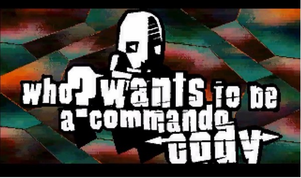
Figure 3: Atari STE Demo STrange roboTS by BLaBla. 2013. (Source: https://youtu.be/fpF_u4mYVAI )
Programmers, graphic artists, and sound artists had to learn to work within these constraints. For the first few years, the commercially available games and applications for these computers were as pedestrian as you might expect. But some developers had greater ambitions; they learned to fully understand the hardware of these comparatively simple machines. They experimented and discovered ways to trick the hardware into exceeding the previous limits. Games and applications started to look, sound, and feel much more advanced than they had any right to be.
The next generation of machines, the 16-bit computers, were released in the mid-1980s, shortly after the launch of the "almighty" IBM PC compatibles. Starting with the Apple Macintosh and the Sinclair QL, followed by the Atari 520ST and the Commodore Amiga, these computers had a variation of the Motorola 68000 CPU running at 7 - 8 MHz. The base models came with 128KB of RAM, but most were only usable if they had 512KB of RAM. Priced at over US-$ 2500, both the Apple Macintosh and the IBM PC were squarely targeted at the high-end market, and the other 16-bit machines were priced and marketed as the next generation of home computers. Like the Macintosh, both the Amiga and the Atari ST came with a mouse. Their operating systems had icons, windows, and menus just like the operating systems we use today. Of course, they were not as refined, but the trajectory to today's user interface paradigms was established. The 16-bit computers even started to support expensive peripherals that only a few private individuals could afford, but businesses needed, like hard disks and a second monitor.
The Apple Macintosh made great strides in education, graphics, desktop publishing, and some areas of business, but offered fewer games than on other systems, and little-to-no demos in the first years. The Atari ST and particularly the Commodore Amiga looked and sounded like the video game cabinets in the arcades; their lush color graphics and ample memory made them ideal for gaming and, by extension, for demos.
Even though this new generation of machines were more advanced, they were still simple enough that diligent and talented developers could learn all aspects of the hardware, and all the tricks of the trade to eke out the last bits of performance.
Attaining this level of competence was not easy; it demanded expertise. Most developers never achieved the mastery necessary to completely exhaust the hardware's potential. Even so, these machines had ample performance to provide great results.
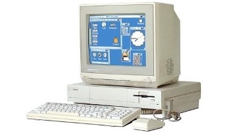
Figure 4: Commodore Amiga 1000 in 1985.
(Source:
https://www.pcwelt.de/news/Commodore-Amiga-steuert-seit-30-Jahren-Klimaanlage-der-Schule-9708602.html
)
1.2.2 The Persistence of the Demoscene Through Deliberate Limitations
Today, programmers, musicians, and graphic artists in the demoscene deliberately set limits on the size or scope of the demos they write. Creators of these audio-visual presentations choose to adopt limitations, such as limits in the size of the program or the number of lines of code that it can occupy at most, and then they produce the most ingenious, dazzling, and impressive art possible within these restrictions. They do not regard restrictions as a disadvantage, but rather as a challenge to show their complete command of a computer's graphics and sound within strict boundaries.
Nowadays, demo-makers meet at demo parties; large get-togethers of like-minded developers in locations that can host hundreds. At demo-parties, like the annual Revision, Evoke, Nordlicht, and Nova, the organizers set challenges with deliberate limitations.[19] Competing participants must adhere to these restrictions and produce interesting and innovative graphics, sound, music, and effects within the chosen constraints. A jury of peers then picks the winner, and awards are handed out in different categories. The winners often do not receive valuable prizes; rather, the reward of gaining the admiration of their peers is what drives them. The limitations imposed are based on the developer. Graphics artists might, for example, be limited in the number of colors they can use in their images or the resolution and size of the whole image or of specific objects, sometimes with only 32 color shades, or using a canvas smaller than most icons on a modern-day smartphone. Musicians might be limited to a specific number of concurrent music channels, with as few as three electronic instrument voices being a possible restriction. Developers are also limited by the memory available to them to be inventive; typical size constraints are, for instance, a maximum of 4KB of storage (yes, these are kilobytes). At other demo parties and in different categories of a competition, the storage restriction might be a bit more generous, at 64KB.
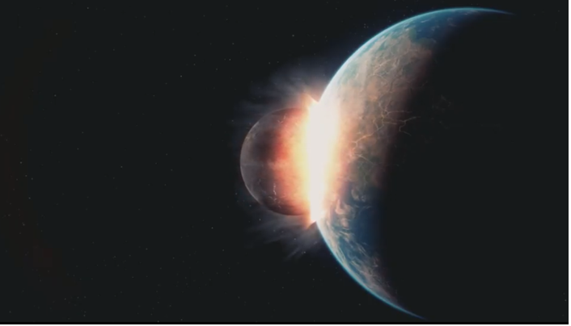
Figure 5: PC Demo Andromeda Software Development (ASD) - For
Your Love. 2018.
(Source:
https://youtu.be/Zrock_tnsSQ
)
Try a little experiment, for example launch Microsoft Word, open a new document, and save it as it is, devoid of any words. Then, open a file browser, seek out the file just saved, and look at the document properties to determine the file size. That empty file will already occupy around a dozen kilobytes without any actual content in it. These are the kinds of constraints that demo-makers choose to work within.
The idea behind these experiments is that adding constraints and limits boosts creativity. Modern computers are very developed in their graphics and sound capabilities, but at the same time, seemingly limitless in that they require large teams of developers, artists, and even project managers to produce impressive results. The sheer number of possibilities can be staggering, mind-boggling, and, ultimately, paralyzing. By embracing "creativity through limitation," digital demo artists avoid being overwhelmed with the possibilities. The clearly-defined limitations provide a laser-sharp focus on delivering something spectacular.
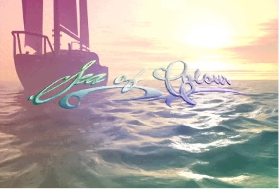
Figure 6: Atari STE Demo Sea of Colour -
Dead Hackers Society. 2015.
(Source:
https://youtu.be/1hvFiv2hpYE
)
In their study of demoscene practices, Crafting Code at the Demo-scene, Hansen, Nørgård, and Halskov write:
"The demoscene is a computer subculture whose members produce 'demos', audio-visual presentations that run in real-time on a computer. The main goal of a demo is to show off technical skill as well as audio-visual aesthetical sense. Hence, a 'demo' is short for demonstration, referring to the fact that one demonstrates the achievement of these three aspects. Demos run on different platforms, ranging from both old hardware like the Commodore 64 or the Commodore Amiga to contemporary platforms like the PC or even Arduino."[20]
Daniel Botz provided one of the most comprehensive studies of the demoscene from its roots in the 1980s to the early 2000s. Botz describes the demoscene in his doctoral thesis titled Kunst, Code und Machine: Die Ästhetik der Computer-Demoszene as:
"The demoscene developed out of the illegal cracker culture, however, it gradually decoupled itself nearly entirely and directed its internal structure completely towards the idea of artistic competition. The contest for the best demo is until today the greatest impulse for productivity and innovation in this non-profit culture."[21]
In Computer Demos - What Makes Them Tick?, Markku Reunanen identifies a key aspect of the demoscene in its competitiveness:
"The demoscene is in a constant state of competition, which is exemplified by numerous practices of the community. To get to the top and acquire fame one needs to impress, win, and be connected."[22]
1.3 The Digital Graffiti of the 1980s: Intros, Cracktros, and Demos
Computer demos evolved out of the cracker and software piracy scene. If you wanted to pirate a copy-protected game or application, you needed to remove the copy protection. This was no trivial task, and it became harder and more complicated over the years as software publishers invented more sophisticated protections.
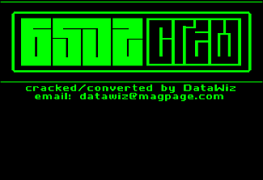
Figure 7: Early cracker intro screen on an Apple II by the
6502crew
(Source:
http://artscene.textfiles.com/intros/APPLEII/6502crew.gif
)
Crackers who had successfully removed the copy protection on a piece of software were proud of their achievement and wanted to boast and seek out the recognition that they had bested large software makers. Hence, they added screens to the games showing off their pirate handle, their codename; of course, the crackers did not use their real names (figure 7). Over time, the intro screens started to become elaborate. They evolved into graphics screens accompanied by music, boasting and bragging about how the crackers had "stuck it to the man." The "man," of course, being the commercial software producers and game publishers who would do their best to protect their commercially distributed software from copying and to actively prevent what the crackers did: make the software freely available for anyone to copy (see figure 8).

Figure 8: Commodore 64 cracktro screen
(Source:
https://www.youtube.com/watch?v=JIKenHtglck
)
Like a bloody 70s slasher movie, an explosive 80s muscle action movie, or a slushy 90s romantic comedy, intros had their tropes: their typical components. Most crackers considered the most important element of their intros to be their logo, which was either the logo of their group or of the individual cracker. The more effects or animation added to the logo, the better. The letters of the logo could be circling around on the screen or be composed of other objects. They might be transparent or in three dimensions or individually spinning and rotating, as though their life depended on it.
The logo was usually supplemented by many greetings. These were nods to other crackers in the scene, to demo-makers, or to games developers. The greetings either scrolled across part of the screen or appeared on separate screens. They could go on for a long time and were a central part of the intros (or cracktros, as the intros of cracked software would retroactively be named).
Apart from distributing cracked software, crackers regarded the greetings as a sign of respect and thus, as currency. Some scrolling texts had their own fonts, meticulously crafted by crackers with graphics skills. In their messages, they not only sent out greetings and kudos, but also subjectively handed out the titles "lamers" and "losers," to anyone they did not like, and attacked them. Attacks were directed towards heads of state like Ronald Reagan, other dignitaries like the Pope, or simply the owners of a particular computer system the crackers did not like. Just as the whole intro was a canvas for self-expression, crackers expressed themselves in the scrolling texts and wrote whatever was on their mind.
Even the computers with advanced sound capabilities for the time still sounded like synthesizers, hence the music accompanying the intros was futuristic and mystical with a focus on beats. Some intros use sound samples in their music.
Crackers gave no consideration to aesthetic principles; the more brash, pompous, and louder, the better. Crackers wanted to show that they were edgy. After all, they distributed their intros on pirated games. Since this was illegal, they considered themselves to be living dangerously.
The graphic screens derived their imagery from many different sources, the most obvious being computer game art or the title graphics of games. Some images were directly lifted from pop culture. Crackers felt the need to be "radical" in a juvenile sense, e.g., using dragons, werewolves, spaceships, alien monsters, skulls, or any other image from movies, comics, or role-playing games.
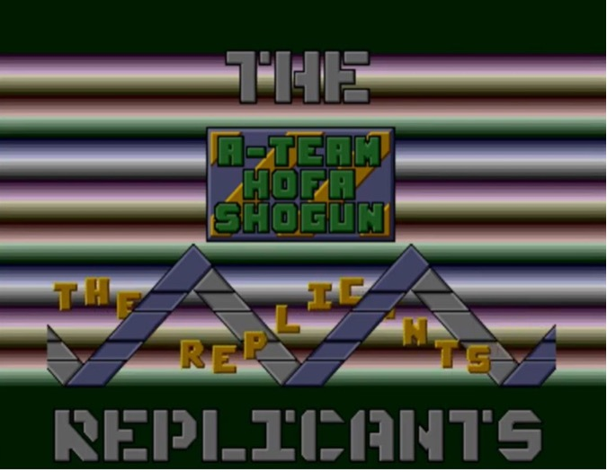
Figure 9: Intro screen by the Replicants, an allusion to not only replicating pirated software, but also to the artificial humans from Blade Runner (Source: https://youtu.be/YExIHjEZjMc )
Some crackers developed such a level of artistry in their intros that the games themselves looked bland by comparison. While cracked software continued to be distributed with an intro, more elaborate intros became stand-alone applications without a pirated game attached. Thus, demos were born.
These demos served no purpose other than to dazzle the beholder and to demonstrate the programming capabilities of their creators. The objective was to be as impressive as possible, and demo-makers did not achieve this by merely doing what other coders had done before them. What better way to demonstrate their capabilities than by programming graphics and sound that were never seen before?
In his article Elektronische Graffiti, Roland Bader compared intros and cracktros with graffiti.[23] He drew parallels between sprayers and crackers; both were "underground" countercultures strongly defined by their illegality. Graffiti artists in the 80s sprayed on public and private property, on freight trains and passenger trains. The police regarded their work as "defacing", and thus damaging the property of others. Both sprayers and crackers had acquired specialized skills and sought out the respect of their peers. Both scenes had a similar aesthetic: edgy and slightly trashy.
While the aesthetic between crackers and sprayers may have been related, the actual act of creation could not have been more different. Crackers essentially sat at a computer and broke the copy protection of software, and intro- and demo-makers sat at a computer and created the graphics, sound, and code for their demos. They distributed their pirated software on Bulletin Board Systems (BBS) or by physically copying the disks and passing them on to others. They did not cause any physical damage, contrary to sprayers. The possible impact to sales for software manufacturers were the only damage, and perhaps minor damage to the reputation of said manufacturers. Cracking was illegal, but it was not physically dangerous, aside from a lack of physical exercise. Cracking software and creating intros and demos were inert and ponderous acts.
Illegally spraying on a property could very well be dangerous. Climbing a train or a roof in the night was physically dangerous, especially when carrying the gear necessary for graffiti, including cans of spray paint, stencils, and protective gear. Spraying on the yards of train stations could be dangerous, as unexpected trains could appear any time. In some cases, sprayers trespassed on guarded property with security personnel. This had the potential to escalate into violence.
Both scenes had a similar language, their own vernacular with handles, greetz, respect and kudos, disses, and blames.[24] Both thrived on the respect gained for their achievements. Sprayers and crackers chose their own names and created their own identity beyond their everyday lives. Both scenes were built on meritocracy, and both did things adults out there "just don't get!"
Thus, the conclusion is that tribalism was a defining factor of these scenes. They formed groups that worked together. In their respective groups, sprayers, crackers, and demo-makers exchanged skills and taught each other their craft. They competed with other groups. Some sprayers regarded parts of the city as their territory. Some crackers and demo-makers regarded the computer systems they used as their territory and would defend it in their intros and demos.
The demo group examined in the following chapter, The Exceptions, emerged from the cracker scene. They garnered attention with their first few intros, and created their first real demo on the computer of their choice, the Atari ST. This was their tribe's territory, and you could be sure they were out to defend it.
1.4 "The Desire to Do the Impossible": Demos as Digital Folklore
In his 2008 talk at the Hack Act Interact Progress (HAIP) festival in Slovenia, Anders Carlsson (aka Goto80) argued that the early demoscene lived and acted by many of the principles that were only later formally defined by the open-source movement.[25] This was because many of the demo-making developers later became part of the open-source movement. One should not underestimate the fact that many of the open-source movement's principles are objectively quite sound and practical in endeavors of non-profit-oriented networking and collaboration. Sharing knowledge and code achieves more sustainable results in the long-term than being secretive about knowledge and keeping source codes away from people who could learn from them and even improve them.
In his effort to put the demoscene in a context, Ville-Matias Heikkila answers the question of whether the demoscene is open-source with three arguments (comments in brackets by Heikkila, quoted directly from Ville-Matias Heikkila's 2009 article Putting the demoscene in a context):[26]
- "global unrestricted peer-to-peer sharing of digital data (albeit originally primarily with snailmail instead of electronic telecommunications)"
- "creating music and other types of art primarily or even exclusively for free non-g digital sharing (I think this is quite obvious)"
- "using elements taken from video games and other creative digital works in one's own creations (ripped game music in demos was commonplace in the early years, as was sample-ripping slightly later)"
Fascinatingly, there is a large overlap with practices of early rap/hip hop music and sound sampling culture as alluded to above.[27] Appropriating pieces of music by sampling and remixing them in a new and different context with other pieces of music that are either wholly original or themselves also appropriated from other sources is commonplace.[28]
On the one hand, sound sampling can be regarded as a form of rebellion against the establishment and the law with the arguably victimless crime of copyright infringement, very much the territory of youth culture over the decades.[29] On the other hand, it is a cultural practice going back millennia; the oral tradition of telling and retelling folk stories and fairy tales, reinterpreting known melodies, changing the lyrics of songs, appropriating classical literary works, and adapting them to a different medium, changing them in the process.[30] [31]Perhaps the human activity of learning behaviors as well as acquiring new knowledge is an act of imitation on the outset that propels the mind into a new gear and gradually jettisons, or at least reduces, imitation in favor of true understanding and creativity.
Anders Carlsson (Goto80) argued in his talk at HAIP that demos are a craft and not art because they are made to show off and win a competition. This holds true for parts of the current-day demoscene that develop demos to compete at demo-parties. There is no way to overstate the massive impact that demo-parties have had on the creation of demos, the cohesion of the scene, and the innovations achieved in only a few days of working together. But demos can also be created completely outside of demo-parties and do not need to be created to win a competition. And even if so, a significant portion of today's output in mainstream art is created in and for competitions, be that architecture, film, or music. To be fair, showing off has always been one of the many motivations to create art, making it difficult to disqualify demos as art just because they were created to show off.
Anders Carlsson modifies his argument in his article The Working Class of Computer Art?, in which he interestingly finds vital similarities.
"What artists and sceners share though is the desire to do the impossible. There is an obsession with transgression in the new media art world too (going beyond the 'system'), but the demoscene is so much ahead of everybody else that nobody gets it."
Carlsson calls it "transgression," while some demo-makers would call it shattering the limits. He then compromises by saying:
"I think that the scene is interesting to art people too. Interesting. But not relevant" and "Demos are more like folk culture, than 'high culture.'" Carlsson finally resigns by remarking, "The demoscene is the eternal underdog of computer art" and describes the low-level work done by sceners in the technology sector that directly benefits media art production. Accordingly, the demoscene is the "working class of art."
In the comments to Carlsson's article, artist and demo-maker Dragan Espenshied makes the argument:
"The difference between art and the demoscene is mostly that art contextualizes itself outside of the scene of artists. Art strives to be meaningful beyond itself."[33]
To this comment, Anders Carlsson replies:
"Couldn't it be argued that new media art has the same kind of problematic relationship to art, as the demoscene has to new media? There was a small hype for computer art/music in the 60's but in the 70's it cooled off and in the 80's it became commercial ... Media art still hasn't been accepted and normalized into the art world, and tends to talk too much about technology."
Consequently, we can close this discussion by accepting the wider notion of art in which demos are an integral part of art making. They might not be high art or part of the established art community but are at least digital folk art and digital folklore. Like media art, they are held back by constant discussions about technology, which bores a mainstream audience because they cannot find any points of identification or societal relevance. Contrarily, there is a niche audience of the demoscene itself that revels in technical details and wants to talk about technology.
However, their discussions about technology are less about its ethics and rather about the process and the techniques used to achieve certain results and effects.
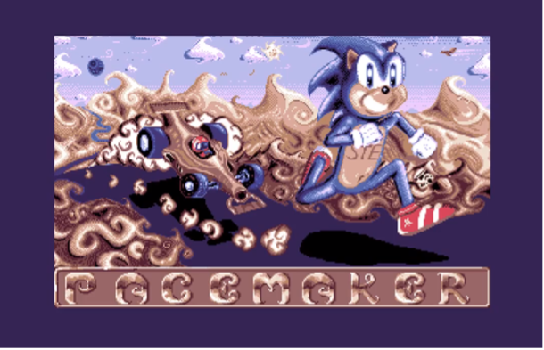
Figure 10: Atari STE Demo Pacemaker by Paradox. 2005. (Source: https://youtu.be/0TMJFF2BHi4)
1.5 What Are Limitations?
Limitations are external to art and to the artist. Not everyone who pursues an endeavor may encounter these challenges. Rather, they are restrictions imposed by the laws of nature, the laws of a country or government, or technical limitations.
They are the color that you need but cannot find, the sound you hear in your head but cannot produce with the instruments you have, the thoughts you want to express but are silenced by authority. They are the space you need to create but cannot find.
Limitations are much more concrete where computer demo art is concerned. Particularly, in the early days of the home computer revolution, computers were not very capable. They had memory restrictions, displayed their graphics in strange ways, and produced unappealing sounds. It took an artist, programmer or musician who really knew how to handle the hardware limitations to conjure beauty out of the machine.
The demoscene has instrumentalized limitations as means to generate creative solutions and as a motivation. They have "weaponized" an aspect of human ingenuity: to see a set of limitations and at first be taken aback, say they are impossible to overcome, but then through hard work, creativity, and sometimes blind luck, nevertheless find means to overcome the limitations or, in the least, make them no longer matter.
1.6 Demo Art Online Collections and Archives
The demoscene's history spans forty years of intros, cracktros and demos on dozens of historic computer systems, ranging from the early days on the Apple II in the late 1970s to the sheer explosion of the home computer revolution in the 1980s. It includes machines such as the Commodore 64 in the USA and mainland Europe, the Sinclair ZX Spectrum, BBC Micro and Amstrad CPC in the United Kingdom, and the venerable Commodore Amiga in the UK, Germany, and the Scandinavian countries.
There are many archives and collections for specific machines like the vibrant scene around the Sinclair ZX Spectrum at http://zxdemo.org. However, the most valuable resources on the internet for demos on all systems are the two largest demo archives: http://www.pouet.net and https://demozoo.org.
The first, the French pouet.net, is the demoscene's memory, listing and archiving historic and "old school" demos on legacy systems like the Commodore 64, the Atari 8-bit line, and, of course, the dynamic duo of the Commodore Amiga and the Atari ST, among many others. Pouet catalogs historic demos, providing dates of creation and the memory footprint of the demos (see figure 11). Where possible, you can download the original executable files and even provide links to recordings of the demos on YouTube.
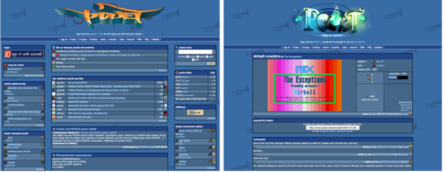
Figure 11: The "oldskool" demo archive at http://www.pouet.net. Left, the homepage, right, a demo detail page
Demozoo is a site that features an archive of demos on modern systems in the active demoscene; it is the archive of current practice (see figure 12). Demozoo provides information and downloads, as well as links to the web locations of the demo-groups that created the demos.
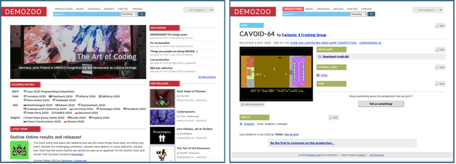
Figure 12: The Demozoo archive at https://demozoo.org. Left. the homepage, right, a demo detail page
The wildly popular Commodore 64, released in 1982, probably has the most active demoscene for an 8-bit computer. Its dedicated graphics hardware with sprites and hardware scrolling are among its great strengths, but the sensational Sound Interface Device, or SID, sound chip is, to this day, a favorite among demo music and chiptune creators. The archive of C64 demos can be found at http://www.c64.ch/demos/.
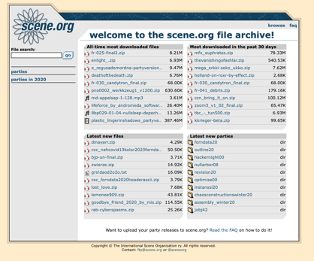
Figure 13: The files section of scene.org at files.scene.org
There are many more resources and collections of demos, including the MSX scene in Japan, the Eastern European demoscene around the Atari 8-bit line (XE/XL), and the ZX Spectrum-clones and imitations that were produced in the twilight years of communism in the late 80s. This 8-bit machine was released in 1982 by Sir Clive Sinclair to be as cheap as possible. It has a few interesting limitations, including not only its ridiculously limited memory, but also its color restriction, allowing only two colors for each 8 x 8-pixel block and a sound beeper that sounds offensive in the wrong hands.
Another valuable resource of a different kind is the source code repositories of demos on Github at https://github.com/topics/demoscene. These repositories not only store the executables of hundreds of classic demos, but also the original source code for many of them. The original source code of The Exceptions' demos is available on Github at https://github.com/ggnkua/Atari_ST_Sources/tree/master/ASM/The%20Exceptions. This is part of a larger effort to preserve the source code of Atari ST applications and demos.
While these demo-archives are a great effort in storing and thus salvaging demos, they are very sparse in describing and analyzing the demos. Therefore, there is a need for an archive that aims to encourage academic research and scholarly analysis of demo art in media art history. The appendices of this thesis will discuss and propose how to create an academic archive of demo-art and its related media.
Finally, the two ever-present general resources for computing history are the Wayback Machine—the diligent section of http://archive.org that "fossilized" lost parts of the web so that we may look back at what is no longer available. And finally, an attempt to distill some of net culture's early days can be found at http://textfiles.com.
1.7 Conclusion: Demos as a Means of Artistic Expression Fueled by Popular Culture
In summary, demos are real-time computer animations with music and sound effects. The demoscene is a youth subculture that emerged from the illegal cracker scene, and gradually established demos as their means of artistic expression. When they emerged, they showcased the abilities of the demo-makers in exceeding the technical capabilities of home computers. Demos had several tropes they included in graphics screens and scrolling texts and manifested in bragging, greetings, and disrespectful messages directed at competitors. They used images and music either as original creations or appropriated from games and pop culture.
Home computers in the 1980s and 1990s were limited in memory, graphics, and sound capabilities; each system had its own limitations. Demo-makers sought to prove that their system of choice was more capable than the manufacturer's specifications and equal to or more capable than other systems.
Demos were freely distributed, and in many cases, the programming techniques used to achieve the effects were shared freely in the demoscene.
In the beginning, demos were a European phenomenon, members of the demoscene were geographically distributed (in these days before the web). Programmers, graphics artists and musicians worked together across country borders to create their digital folklore and their demos. They were also fragmented by computer systems: some developed for the Commodore 64, others for the Commodore Amiga. On the Atari ST, there was one group that started it all: The Exceptions.
Footnotes
[14]
Art of Coding. Breakthrough of Digital Culture: Finland
accepts the Demoscene on its national UNESCO list of
intangible cultural heritage of humanity.
http://demoscene-the-art-of-coding.net/2020/04/15/breakthrough-finland-accepts-demoscene-on-their-national-list-of-intangible-cultural-heritage-of-humanity/
(Retrieved on April 28, 2020)
» Back [14]
[15]
Art-of-Coding, an initiative to enlist the demoscene as first
digital culture on the list of UNESCO intangible world
cultural heritage
http://demoscene-the-art-of-coding.net
(Retrieved on April 18, 2020)
» Back [15]
[16]
Art of Coding. Demoscene nominated as intangible UNESCO
cultural heritage in Germany.
http://demoscene-the-art-of-coding.net/2020/04/21/demoscene-nominated-as-intangible-unesco-cultural-heritage-in-germany/" (Retrieved on April 24, 2020)
» Back [16]
[17] Kultur und Wissenschaft in Nordrhein-Westfalen.
April 17, 2020.
Immaterielles Kulturerbe: Steigerlied und Trinkhallenkultur
werden in Landesinventar aufgenommen.
(German language)
https://www.mkw.nrw/Presse/Immaterielles_Kulturerbe_Steigerlied_Trinkhallenkultur
(Retrieved on April 24, 2020)
» Back [17]
[18] Public demo code repositories on Github.
https://github.com/topics/demoscene
(Retrieved on October 16, 2020)
» Back [18]
[19] For a full schedule of the current demo parties,
see
https://www.demoparty.net
(Retrieved on April 30, 2020)
» Back [19]
[20] Hansen, Nicolai; Nørgård, Rikke; Halskov, Kim.
2014.
Crafting Code at the Demo-scene. Proceedings of the
Conference on Designing Interactive Systems: Processes,
Practices, Methods, and Techniques.
Aarhus University.
https://dl.acm.org/doi/pdf/10.1145/2598510.2598526
» Back [20]
[21] Daniel Botz. 2011. Kunst, Code und Maschine. Die Ästhetik der Computer-Demoszene. Transcript Verlag, Kultur- und Medientheorie. Bielefeld.
Original Text in German: "Die Demoszene entstand aus der
illegalen Cracker-Kultur, trennte sich aber mit der Zeit fast
völlig von ihr und richtete ihre interne Struktur ganz am
künstlerischen Wettbewerbsgedanken aus. Der Wettstreit um die
beste Demo ist bis heute der stärkste Antrieb für Produktivität
und Innovation innerhalb dieser Non-Profit-Kultur." Page 7.
» Back [21]
[22] Reunanen, Markku. 2010.
Computer Demos – What Makes Them Tick? (Supervisor:
Prof. Tapio Takala). Helsinki. Aalto University, School of
Science and Technology, Faculty of Information and Natural
Sciences, Department of Media Technology. Page 33.
» Back [22]
[23]
Bader, Roland. Elektronische Graffiti. 1990. Pages
182-193. Collected in: Schindler, Wolfgang.
MaC* - Reloaded: Perspektiven aus der Skepsis [für *Menschen
am Computer].
RabenStück Verlag für Kinder- und Jugendhilfe, 2005. 246
pages.
» Back [23]
[24]
According to Doreen Hartmann's doctoral thesis turned book
Digital Art Natives, disrespectful attacks on others were also
referred to "fuckings". I revel in the fact that Hartmann
included this term in a serious scientific work. Who am I to
withhold it from a citation in my own work?
» Back [24]
[25] Carlsson, Anders (aka Goto80).
Talk at HAIP - Hack Act Interact Progress. Chipflip.
November 23, 2008.
https://chipflip.wordpress.com/2008/11/23/talk-at-haip-hack-act-interact-progress/
(Retrieved on April 12, 2020)
» Back [25]
[26] Ville-Matias Heikkila.
Putting the demoscene in a context. 2009.
https://www.academia.edu/2719288/Putting_the_demoscene_in_a_context
(Retrieved on May 4, 2020)
» Back [26]
[27] The Guardian, September 28, 2009. McNamee,
David. Hey, what's that sound: Sampler.
https://www.theguardian.com/music/2009/sep/28/whats-that-sound-sampler
(Retrieved on May 6, 2020)
» Back [27]
[28] Computer Music.
A Brief history of sampling.
Music Radar. August 5, 2014.
https://www.musicradar.com/tuition/tech/a-brief-history-of-sampling-604868
(Retrieved on May 4, 2020)
» Back [28]
[29] Anderson, Rick.
Is Copyright Piracy Morally Wrong or Merely Illegal? The
Malum Prohibitum/Malum in Se Conundrum
https://scholarlykitchen.sspnet.org/2018/04/30/copyright-piracy-morally-wrong-merely-illegal-malum-prohibitum-malum-se-conundrum/
(Retrieved on May 5, 2020)
» Back [29]
[30] Carthy, Julie. 1984.
Folklore in the Oral Tradition, Fairytales, Fables and
Folk-legend.
Yale-New Haven Teachers Institute.
https://web.archive.org/web/20160719070432/http://www.yale.edu/ynhti/curriculum/units/1984/4/84.04.01.x.html
(Retrieved on May 6, 2020)
» Back [30]
[31] Desmet, Christy; Sawyer, Robert (editors).
Shakespeare and Appropriation. Psychology Press, 1999.
240 pages.
https://books.google.bg/books?id=aVYJxwqabIcC&printsec=frontcover&hl=de&source=gbs_ge_summary_r&cad=0#v=onepage&q&f=false
(Retrieved on May 6, 2020)
» Back [31]
[32] Chipflip. February 6, 2012. Carlsson, Anders.
The Working Class of Computer Art?
https://chipflip.wordpress.com/2012/02/06/the-working-class-of-computer-art/
(Retrieved on May 1, 2020)
» Back [32]
[33] Chipflip. February 6, 2012. See comments by
Dragan under The Working Class of Computer Art?
https://chipflip.wordpress.com/2012/02/06/the-working-class-of-computer-art/
(Retrieved on May 1, 2020)
» Back [33]